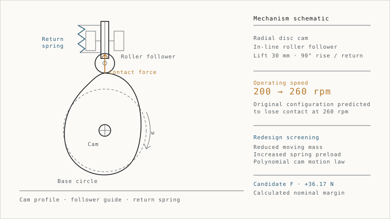

High-Speed Cam–Follower Redesign
Investigation of predicted contact loss and robustness-constrained design screening.
A spring-return cam–follower mechanism was investigated for an increase in operating speed from 200 to 260 rpm. A reduced-order dynamic model predicted loss of contact in the original configuration at the higher speed. Redesign screening combined reduced effective moving mass, increased spring preload and a revised polynomial cam motion law. Candidate F achieved a calculated nominal minimum contact-force margin of +36.17 N and a worst-corner margin of +16.26 N within the evaluated synthetic uncertainty envelope.
- Engineering focus
- Mechanism dynamics · Unilateral contact · Robustness screening
Candidate F was selected as the preferred analytical development concept, with Candidate G retained as a fallback. The margins are calculated results, not measured outcomes.
- Synthetic inputs; the study does not represent an actual client failure.
- No representative FEA, physical testing or endurance validation exists.
- Assembly stiffness, bearing and contact durability, and manufacturing feasibility remain open.